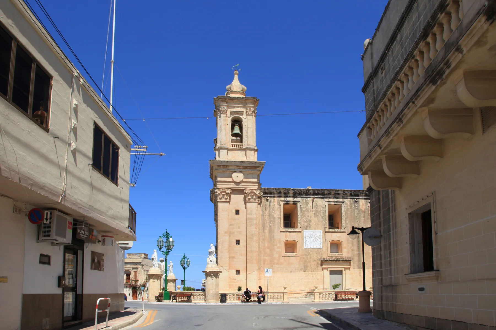

Narrow streets and the parish-square context make the building entrance, stairs, unloading and evening conditions more useful than a broad locality label.
GĦARGĦUR · READ THE VILLAGE
One small place. More than one setting.
Start with the old core around the parish and Misraħ il-Knisja, then check the exact street, gradient and rural edge before comparing homes.

COMPACT DOES NOT MEAN UNIFORM
Read the core and the edge separately.
The Local Council describes Għargħur as a small village between Naxxar and Madliena, surrounded by agricultural land. That gives useful orientation, but it does not turn every address into the same walking, parking or outlook experience.
Map the outward walk and the return route separately. An elevated or rural-edge address does not establish easy walking or a view.
Naxxar and Madliena sit beside Għargħur but remain distinct property contexts. Baħar iċ-Ċagħaq and Magħtab are separate named places too.
A real centre, not a shortcut.
The church, square and surrounding streets provide a clear visual anchor. They do not prove that a listing is walkable, quiet, step-free or easy to park beside. Verify the street and entrance through the official address register.
Office of the Address Registrar ↗Landscape needs exact coordinates.
The council records agricultural land around the village. A property description still needs verified coordinates before it can claim a countryside outlook, edge position or route towards neighbouring localities.
Local Council geography ↗VERIFIED EVERYDAY EXAMPLES
Useful anchors, without a ranking.
These examples establish everyday and social context. They do not claim that a shop or venue is closest to every home. Check current hours, stock, menus, delivery and access directly.
MyConvenience
The operator lists its Għargħur branch at 16 Triq l-Oratorju. A listing still needs its own routed walk and current service check.
Operator store locator ↗Berta
The operator gives its address as 1 Triq Karmnu Zarb and describes a café and bistro in Għargħur. This is a sourced example, not a quality claim.
Berta operator page ↗Village restaurants
The current MTA register lists Da Nino Trattoria, Metz Bop and Ta Bejnietna in Gharghur. Details and licence status need a fresh check before use.
MTA restaurant register ↗Documented history
The council records historic forms of the village name and a Roman oil press found near St John the Baptist church. Local legend remains clearly separated from documented finds.
Għargħur Local Council ↗Primary care is a current check.
Primary HealthCare currently assigns Gharghur residents to Birkirkara Health Centre and directs acute or immediate care to Mosta when Birkirkara is closed. Services and opening arrangements can change, so confirm the correct point of care directly.
No straight line becomes a walking route.
This edition draws no district boundary, coastal shortcut or generic walk. Verified walking geometry, bus information, current car traffic and taxi-price observations remain separate sources and require the exact origin, destination, mode and observation time.
Load the village overview only when you need it.
The map shows the village core, surrounding streets and nearby labels for orientation. It deliberately draws no locality border, route, coastal connection or journey time and loads from OpenStreetMap only after your click.
Għargħur Local Council geography · Local Council history · Office of the Address Registrar · Primary HealthCare · MyConvenience · Berta Boutique Café · Malta Tourism Authority register
The council's historical-places page currently contains no supporting content and is not used for monument claims. No ranking, fixed opening hours, property-specific route, accessibility promise, guaranteed outlook, parking claim or locality-wide journey time is claimed.